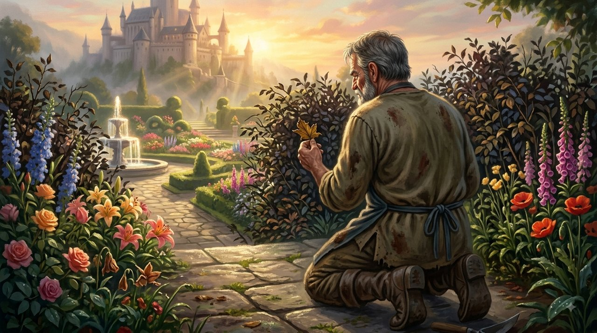
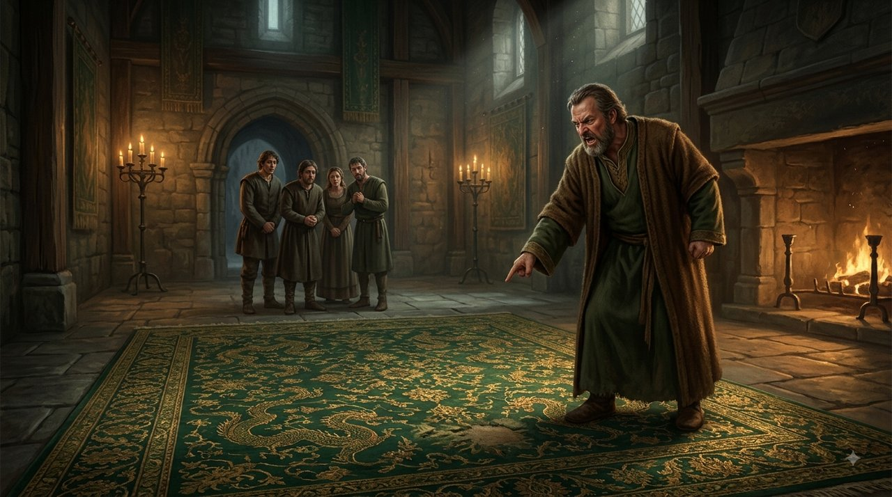
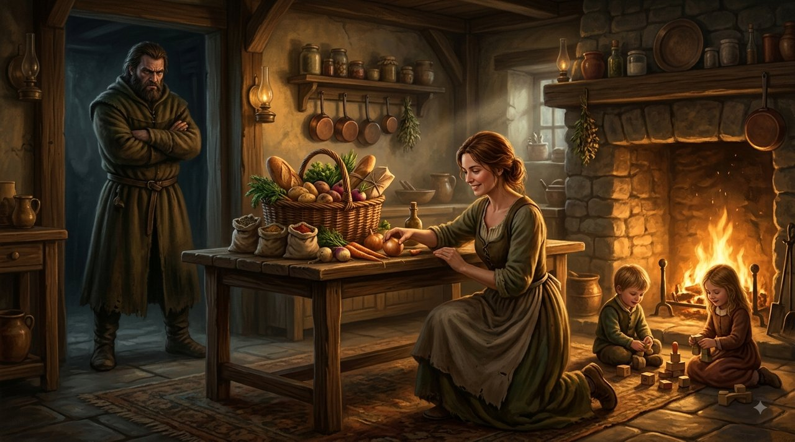
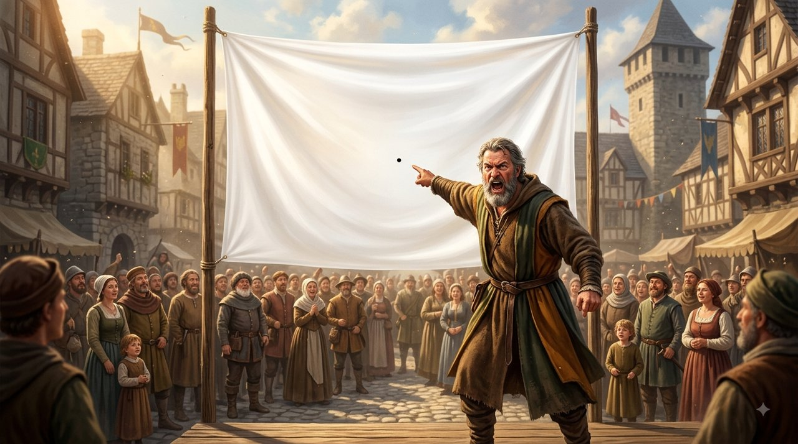
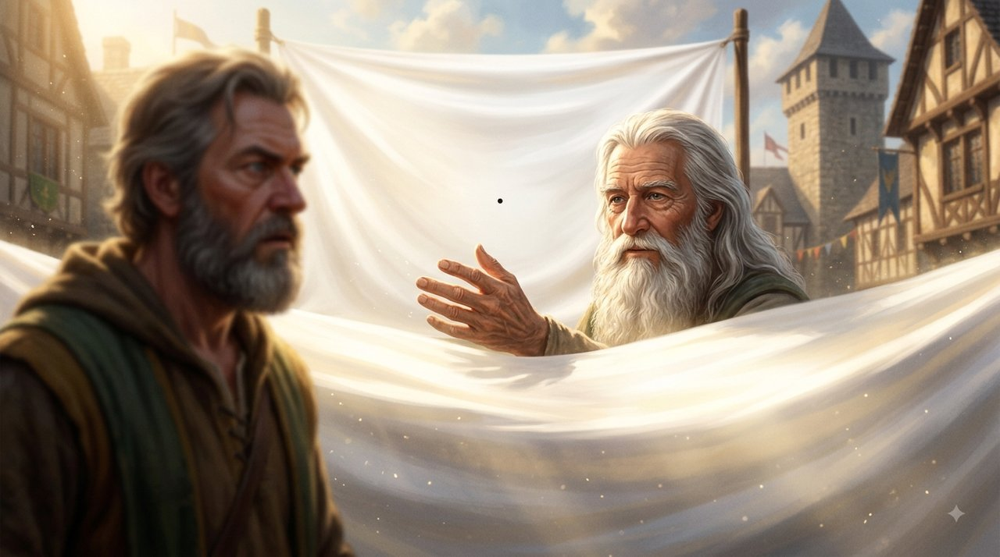

בממלכת אור־השחר גר שומר הגנים המלכותי, אלרן. לאלרן הייתה עין חדה, אך תכונה אחת החשיכה את חייו: הוא מעולם לא ראה את האור, אלא נמשך תמיד אל הנקודות השחורות.

אם שזרו עבורו שטיח משי עם אלפי חוטי זהב ונקודה אחת דהויה, היה זועק בזעם על הכיעור של השטיח ועל הכוונה לפגוע בו.

בביתו, אשתו המסורה גידלה את ילדיהם, בישלה ודאגה לכל מחסורו. אך אלרן לא ראה עשרות שנות מסירות. אם שבה מהשוק ושכחה תבלין אחד מתוך עשרים, ראה רק את החסר והטיח בה שהיא מזלזלת בו ושמעולם לא היה חשוב לה. כשמשפחתו הזמינה אותו לאירועים, סרק את החדר כצייד: כל מבט חטוף או עיכוב בברכת שלום הפכו למזימה שמצדיקה נידוי וחרם.
יום אחד, הציג אורג זקן בכיכר העיר את "אריג האמת" – יריעת משי ענקית, לבנה ובוהקת, ובמרכזה נקודת דיו זעירה בגודל גרגר שומשום.

אלרן נעמד מול הבד וזעק: "איזו חרפה! הבד כולו מוכתם ומכוער!"
האורג הביט בו ברוגע ושאל: "מדוע מתוך מרחב עצום של משי לבן וטהור, בחרת לראות רק את גרגר הדיו הקטן ולשפוט לפיו את הכל?"
אלרן נאלם דום.
"אתה מחפש את הפגם משום שבתוכך אתה מרגיש פגום," אמר הזקן. "מי שמחפש על מה לכעוס, תמיד ימצא סיבה. כשאתה מתמקד רק בנקודות השחורות, אתה עיוור לים של אהבה ומסירות שמקיף אותך. איש אינו מנסה להרוס אותך – אתה מרעיל את בארך בעצמך."

מי שמחפש פגמים ימצא אותם תמיד. התמקדות בחסר ובשגיאות קטנות מוחקת עולם שלם של טוב, והופכת את האדם לקורבן של מציאות שהוא עצמו צבע בשחור.